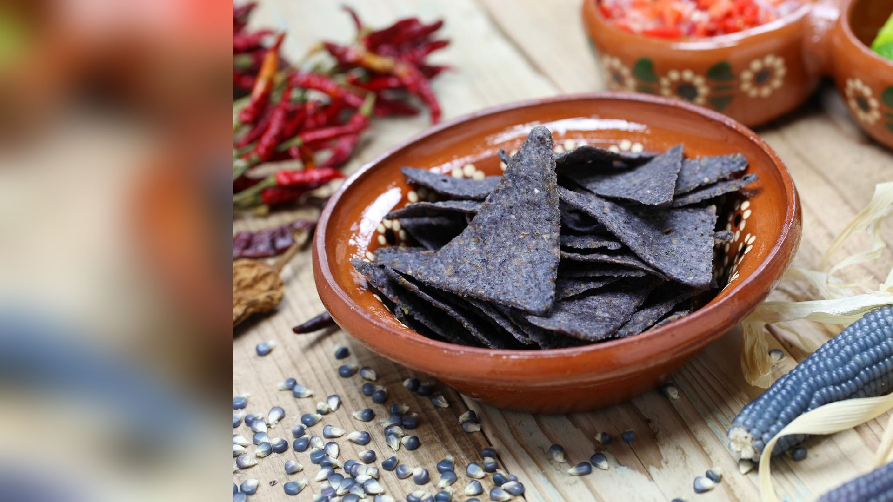

Class Exercise 20
Pick one Indigenous practice. Talk it over in a small group. How can it help us reach sustainability?
Enter today's code
Your instructor shows a code on screen at the start of class. Checking in counts toward your participation grade.
Learn from a practice, then talk it through
Pick one practice
Read about the eight practices. Then choose the one you find most interesting.
Talk it over
Find classmates who picked the same practice, or one close to it. Share what you learned and what surprised you.
Say why it helps
Write one short answer, up to 140 characters: how can this practice help us reach sustainability?
Optional: read the Washington Post article in Module 7 first.
Eight Indigenous practices
Each one has helped people live well with the land. Tap the magnifier beside a practice to read about it. Read at least three.
Swinomish clam gardens
What it is. The Swinomish people shape the shore with rock walls so the beach is flatter and more clams can grow. The gardens are tended, harvested and looked after over many years.
Think about it. A food place that gets better because people look after it. What does that say about harvesting and caring together?
Hopi dryland farming
What it is. Hopi farmers grow corn in a dry place with only 6 to 10 inches of rain a year. They keep many varieties, follow the natural cycle, and set plant spacing and depth to fit the land.
Think about it. Corn is raised to fit the environment, not the other way round. How does keeping many varieties help in a drought?
Zuni waffle gardens
What it is. Zuni gardeners build small square beds with low walls of earth around them, like a waffle. The walls hold rain and water from the ditch near the plants.
Think about it. Water is scarce in a dry place. How does shaping the land help a small garden use less water?
Prescribed fire
What it is. Some Indigenous peoples use planned, controlled burns to clear dry brush. Cleared land has less fuel, so big, hot wildfires are less likely.
Think about it. Fire is a tool here, not only a danger. How could burning on purpose protect people, forests and homes?
San Carlos Apache tribal forestry
What it is. The San Carlos Apache Tribe runs a forestry program to look after the forests on its land in Arizona.
Think about it. Who makes the choices about a forest? What changes when the people who live there manage it?
Karuk and Yurok salmon restoration
What it is. The Karuk and Yurok peoples work to restore Chinook salmon runs. Salmon matter for food, culture and a healthy river.
Think about it. One fish can link a river, a culture and a food supply. Who loses when the salmon disappear, and who gains when they return?
New Mexico acequias
What it is. Acequias are community-run irrigation ditches in New Mexico. Neighbors share the water and the work of keeping the ditch clean, using rules they agree on together.
Think about it. Shared rules can share a scarce resource fairly. What makes a community follow them?
Resilient seeds worldwide
What it is. Communities around the world save, swap and plant many varieties of seeds, like Hopi corn and Andean potatoes. A mix of varieties helps crops survive pests, drought and a changing climate.
Think about it. If every farm grew the same seed, what could go wrong? How do saved seeds protect food in the future?
Which practice will you explore?
Tap one practice. You can change your mind until you submit.
How can this practice help sustainability?
Choose a practice on the last slide
- What does the practice do for people and for nature?
- Why does it work in that place?
- How could it help us reach sustainability today?